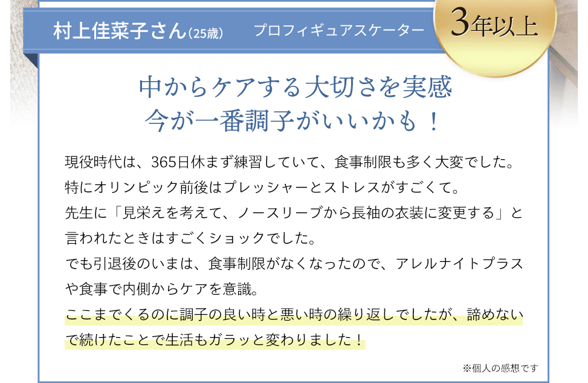
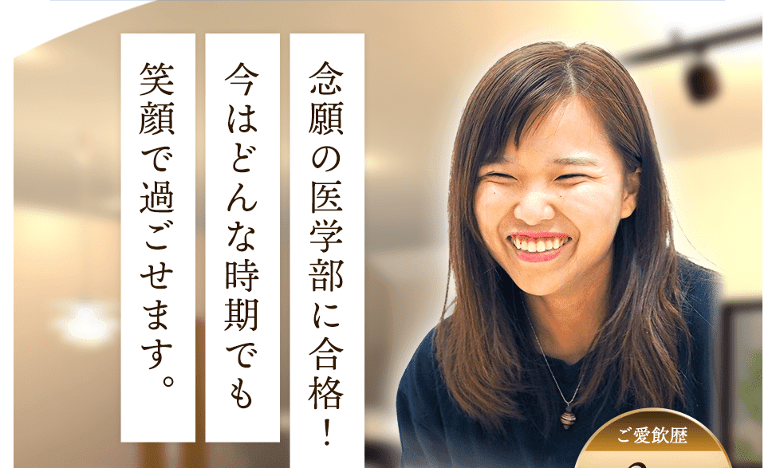
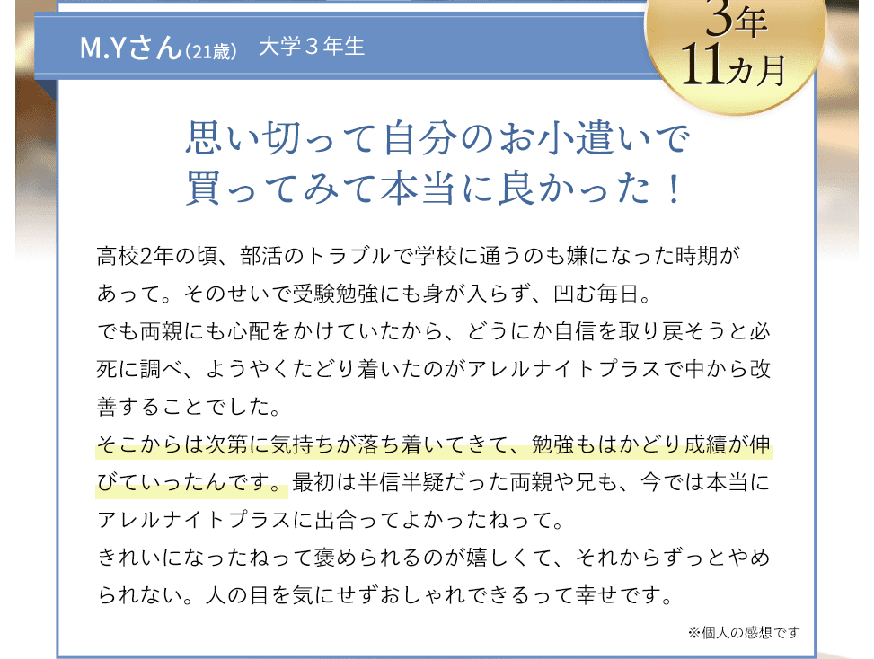
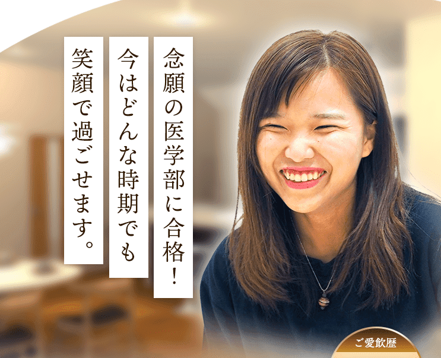
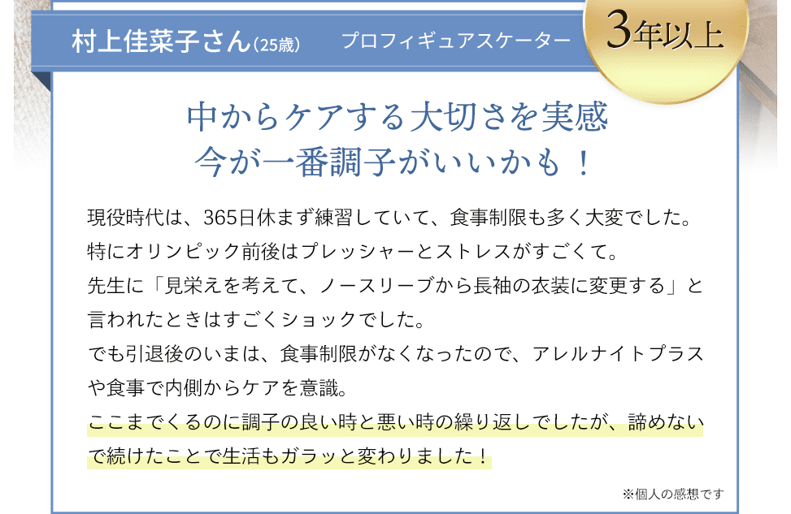
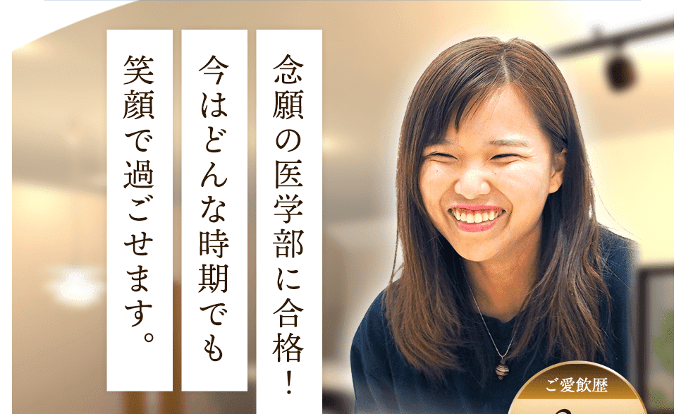
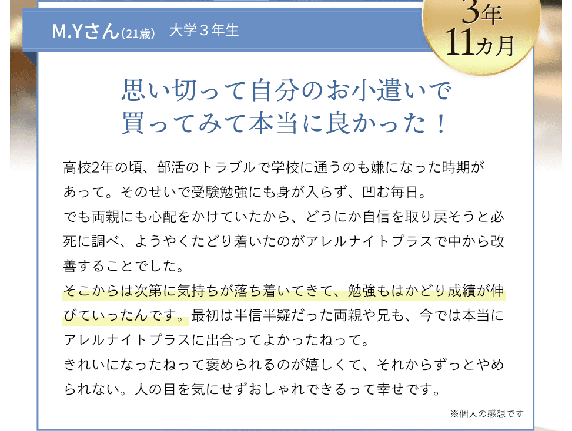
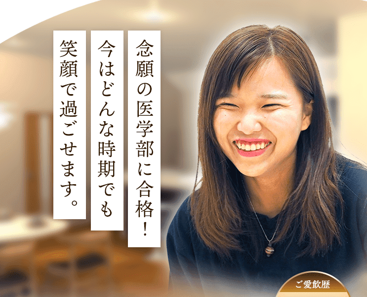
 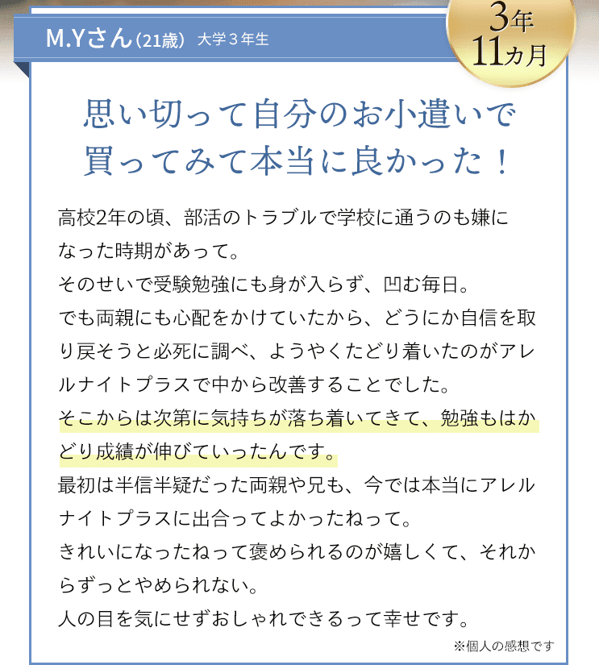
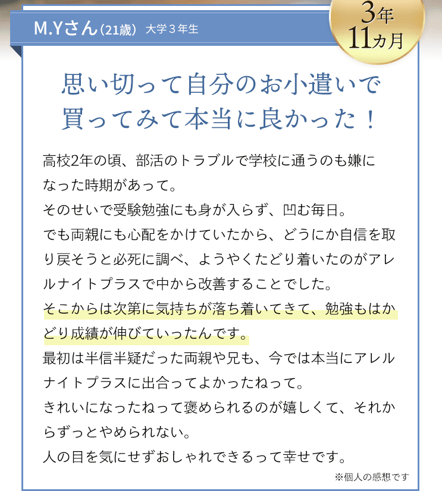
 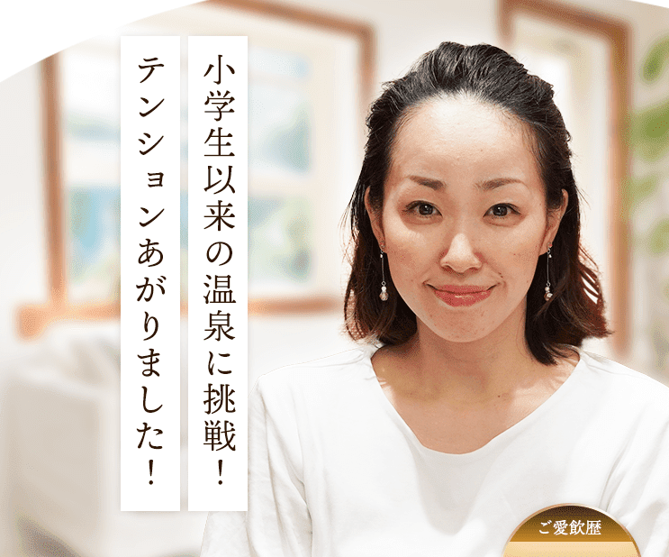
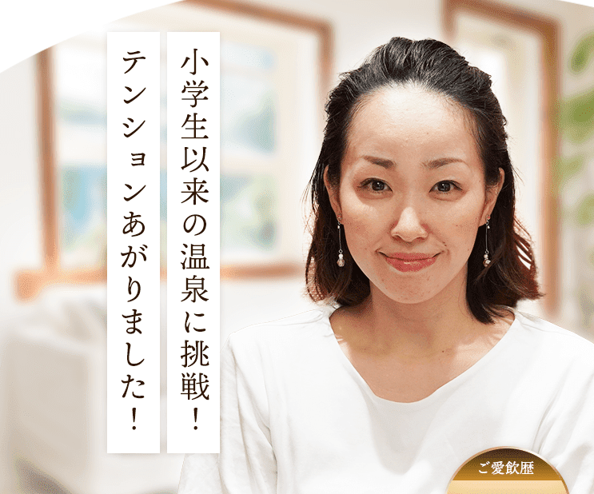

約1,800人の敏感、デリケートな方の声から生まれた
さまざまな刺激や敏感な方のお悩みに
独自の複合配合でトータルにケア！
※2013年4月～2014年1月までに行ったアンケート1877名
※ビオチンは、皮膚や粘膜の健康維持を助ける栄養素です。本品は、多量摂取により疾病が治癒したり、より健康が増進するものではありません。１日の摂取目安量を守ってください。


- 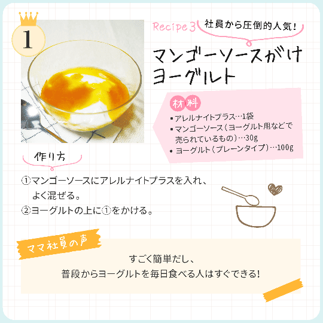
- 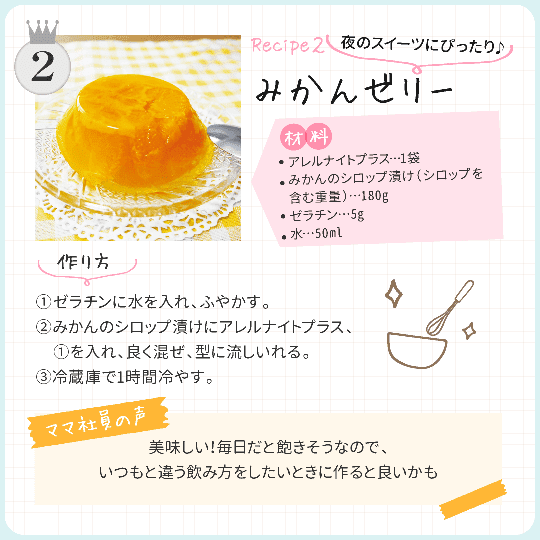


毎日のストレス、季節や環境の変化。
最近は、刺激に敏感な人が増えていると言われています。
大人になってからも、
環境などがどうしても
気になってしまうもの。
そんな、ケアに悩んでお過ごしの方
も多いのではないでしょうか。
毎日を快適に過ごすために、
カラダの中からバランスを整える
ことはもちろん、
不足しやすい栄養素の補給や、
深い休息、心のケアも大切です。
選んだのは「酒粕」由来の乳酸菌
乳酸菌はどれも同じだと思っていませんか？
いいえ！乳酸菌にも、いろいろな種類があります。
ヒトにも個性があるように、
乳酸菌も菌株によって
その能力は異なります。
ストレスや環境の変化で、
バランスを崩しがちな
現代人の「快適」に有用なのは
酒粕由来の
「K-2乳酸菌（植物性ラクトバチルス乳酸菌）」。
その臨床研究は
日本農芸化学会などでも発表されています。
さらに、アレルナイトプラスには
研究結果より導き出された量を
手軽にしっかりとれるように配合しています。
専門家も注目の成分
ビオチン※2は不足すると
皮膚や粘膜の健康に
影響を及ぼすと考えられています。
人体に欠かせない働きも持つことから、
専門家の間でも注目を浴びています。
アレルナイトプラス一本で、
ビオチンの一日の目安量※3を
摂取可能。
さらに、現代人の食生活では不足しやすい栄養素のひとつといわれる
ビタミンB群（７種類）もまとめて配合しています。
※2 ビオチンは皮膚や粘膜の健康維持に必要な栄養素です。
※3 一日の成人の目安量（50μｇ）日本人の食事摂取基準（2015 年版） 参照
| ビオチン | 60μg (120％)※ |
|---|---|
| ビタミンB12 | 3μg |
| ビタミンB1 | 10mg |
| ナイアシン | 30mg |
| ビタミンB2 | 40mg |
| パントテン酸 | 30mg |
| ビタミンB6 | 20mg |
| 葉酸 | 400μg |
休息時におすすめの成分
敏感デリケートな方こそ
質のいい十分な休息が大切です。
そこで、ゆったりとした休息時に積極的に補いたい
主役級の成分を配合しました。
特にギャバとラフマ葉は相性がよく、
専門家からも注目されています。
専門家と共同開発をし、
安心と品質に徹底的に
こだわりました。
※えび、かに、小麦、そば、卵、乳、落花生(ピーナッツ)、アーモンド、あわび、
いか、いくら、オレンジ、カシューナッツ、キウイフルーツ、牛肉、くるみ、
ごま、さけ、さば、大豆、 鶏肉、バナナ、豚肉、まつたけ、もも、やまいも、りんご、ゼラチン
続けやすい飲み心地に
グレープフルーツ風味で毎日おいしく続けられ、
いろんなアレンジが楽しめます。
毎日続けていただくために、
美味しく飲める味を徹底的に追求しました。
グレープフルーツ風味なので、
お水はもちろん紅茶や炭酸水に入れて
一緒に飲んでもおいしいと好評です。
※グレープフルーツの果汁は含まれておりません。

- 色んなものを使っても駄目なのに、
アレルナイトプラスが良い理由は？ - それは、その場かぎりの対処ではなく、
栄養バランス全体を見直すことが大切だから。
- なんで、アレルナイトプラスは、
他のサプリと違うの？ - それは、自社で今までになかった新発想の成分の
組み合わせと、こだわりの量が配合されているから。
敏感・デリケートな方のための商品だから、
製造過程にもこだわりました。
健康食品GMP認定の国内工場でひとつひとつ丁寧に
つくられています。
また、アレルギー特定原材料等２８品目の不使用※、
着色料・防腐剤・ステロイドの不使用で無添加。
優しい商品づくりを心がけています。
※ ご年齢は取材当時のものです。個人の感想であり、商品の効果を保証するものではありません。


よくあるご質問
- いつのタイミングで飲んだらいいのですか？
- 食品ですので基本的にはいつお飲みいただいても構いません。 1日1本を目安に、お休み前など、お好きなお時間にお召し上がりくださいませ。 苦味が気になるかたは、先に水分を口に含んでからお飲みください。
- 夜に飲み忘れたのですが、昼間飲んでも大丈夫でしょうか。
- アレルナイトプラスは食品ですので、基本的にいつお飲み頂いても問題ございません。
- 病院でもらった薬を飲んでいますが大丈夫ですか？
- 食品成分のみを使用しておりますので基本的には差し支えございませんが、お薬と併用されたい場合はかかりつけのお医者様や薬剤師の方にご相談の上、ご飲用いただくことをおすすめしております。
- アレルナイトプラスを飲用後、尿が黄色になったのですが大丈夫でしょうか。
- アレルナイトプラスの服用により、尿が黄色くなることがありますが、これは本品に含まれているビタミンB2が吸収され、 その一部が尿中に排泄されるためです。したがってご心配はされなくても大丈夫です。
- 子供も飲んで大丈夫ですか。
- アレルナイトプラスはビタミンも含めたっぷり配合しておりますので、6歳以上のお客様におススメしております。
- 妊娠中・授乳中に飲んでも大丈夫ですか？
- 妊娠・授乳中の方は医師や薬剤師の方にご相談のうえ、ご飲用いただくことをおすすめしております。

お買い物ガイド
-
お支払いについて
お支払い方法
代金引換、クレジットカード、SCORE後払い（振込用紙）となっております。
クレジットカードのお支払いに関しては、お届け毎に各クレジットカード会員規約に基づき、お客様の口座より引落しとなります。 代金引換払いの場合は、商品お届け時に配達員にお支払いください。
コンビニエンスストア・ゆうちょ銀行、郵便局、LINE Payまたは楽天銀行コンビニ支払サービスからの後払いに関しては、商品到着後14日以内にお支払いください。 2回目以降も同じ方法でのお支払いとなります。消費税について
商品の価格は、消費税込みです。
配送について
配送業者
佐川急便でお届けします。ポストにお届けの配送方法をご選択の場合は、日本郵便でのお届けとなります。
送料
アレルナイトプラス30本セット「定期コース」、「単品コース」は送料無料です。
-
商品に関するお問い合わせ
当社営業時間 平日10時～18時半まで
フリーダイヤル：0120-079-996
返品について
当社営業時間 平日10時～18時半まで
フリーダイヤル：0120-079-996
ご連絡頂き、返品の旨をお伝えください。
担当者より返品手順のご説明申し上げます。
〒103-0023
東京都中央区日本橋本町1-5-4 住友不動産日本橋ビル1階
オリエンタルバイオ株式会社
お客様のご都合により返品される場合は、下記の通りの条件となります。
①交換・返品のお申し出は、ご注文商品到着後8日以内にお願いいたします。
②ご返品時にかかる送料（宅配送料・現金書留送料など）は、お客様のご負担となります。
③クレジットカードにてお支払いの場合、返品はお受けできません。
④未開封品に限り返品をお受けしております。（外装フィルムを含む）
⑤割引制度をご購入いただいた場合は、ご購入時の割引単価ではなく、お客様が既に消費（開封）された商品を本来の販売価格に割り当て、ご購入時のお支払額との差額を求めて返金額を算出いたします。